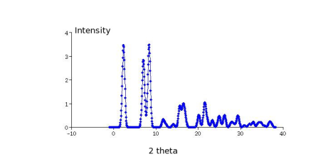

.. such a reflection list can be easily transformed into a diffraction pattern
by convolution with the resolution function of a neutron diffractometer.
- Simple resolution functions can be easily generated with the help of the programs
gauss and lorentz. Any other numerical
resolution function, e.g. from a measurement or simulation can be used.
- Use program convolute for doing the convolution.
Here is an example command:
convolute 6 8 results/mcdiff.out
1 2 resultshb/resolution.dat
... this gives magnetic pattern such as shown in fig. 11
- Usually the convolution needs to be done to compare to experimental
data and needs only to be evaluated at the experimental data points, for
example the measured scattering angle values
 . This can be
done by adding a data file to the command,
convolute 6 8 results/mcdiff.out
1 2 resultshb/resolution.dat 1 2 datafile.dat. In our example the
data file contains the experimental data in columns 1 (angle) and columns 2 (Intensity).
. This can be
done by adding a data file to the command,
convolute 6 8 results/mcdiff.out
1 2 resultshb/resolution.dat 1 2 datafile.dat. In our example the
data file contains the experimental data in columns 1 (angle) and columns 2 (Intensity).
- If needed the resolution function can be stretched using stretching
values given in a separate column of the data file - the command is then
convolute 6 8 results/mcdiff.out
1 2 resultshb/resolution.dat 1 2 datafile.dat 13 (in this example the stretching
factor is taken from column 13 of the datafile.
- Generating of the stretching factor: the stretching factor
may be generated by program uvw2fwhm from
the scattering angle values and the parameters U,V and W (as in FullProf.
Figure 11:
Calculated magnetic neutron powder diffraction pattern
of NdCu [26] at T=2 K.
[plot created by program mcdiff+convolute+display]
[26] at T=2 K.
[plot created by program mcdiff+convolute+display]
|  |